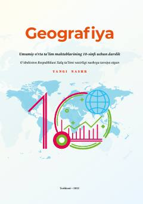

G110-sinf o'quvchilari uchun jahon iqtisodiy va ijtimoiy geografiyasidan rasmiy darslik.
Mazkur darslik umumiy o'rta ta'lim maktablarining 10-sinfi uchun mo'ljallangan bo'lib, jahon iqtisodiy va ijtimoiy geografiyasi, jahonning siyosiy xaritasi, tabiiy resurslar, aholi va xo'jalik geografiyasi hamda mintaqaviy tavsiflarni o'z ichiga oladi. Kitobda zamonaviy geografik ma'lumotlar, amaliy mashg'ulotlar va mavzuga oid xaritalar berilgan.